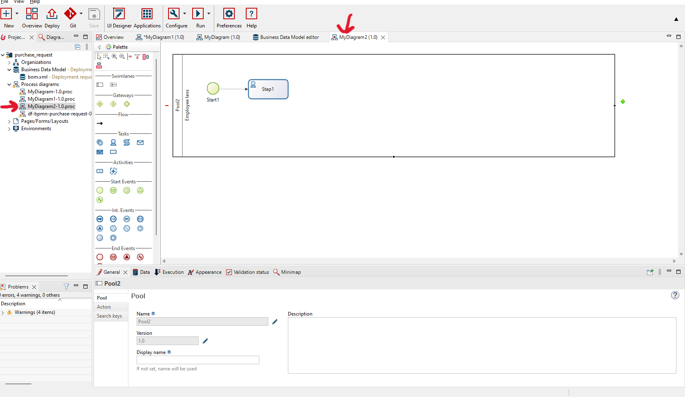
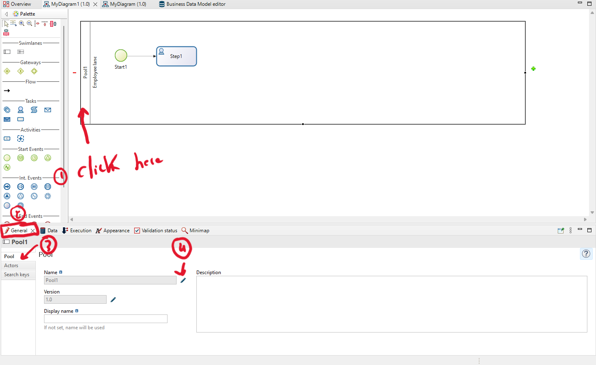
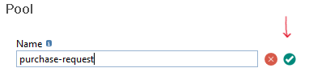
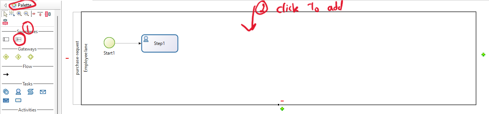
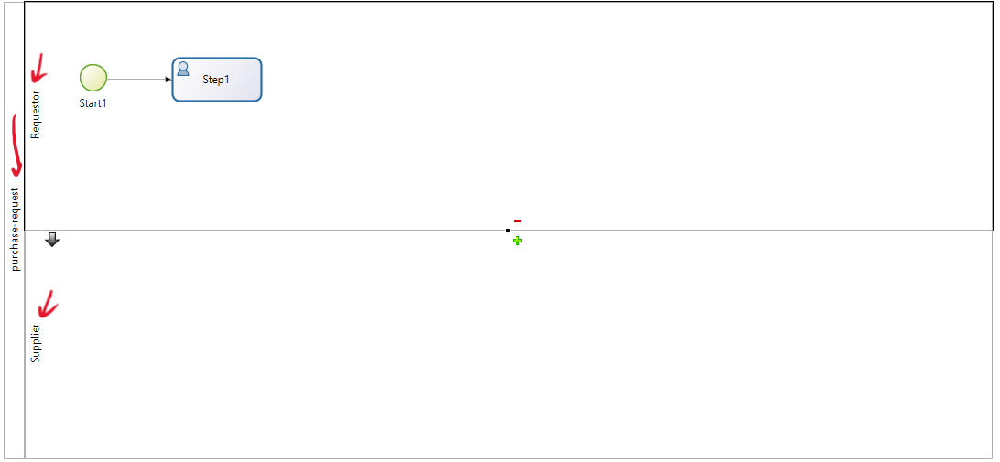
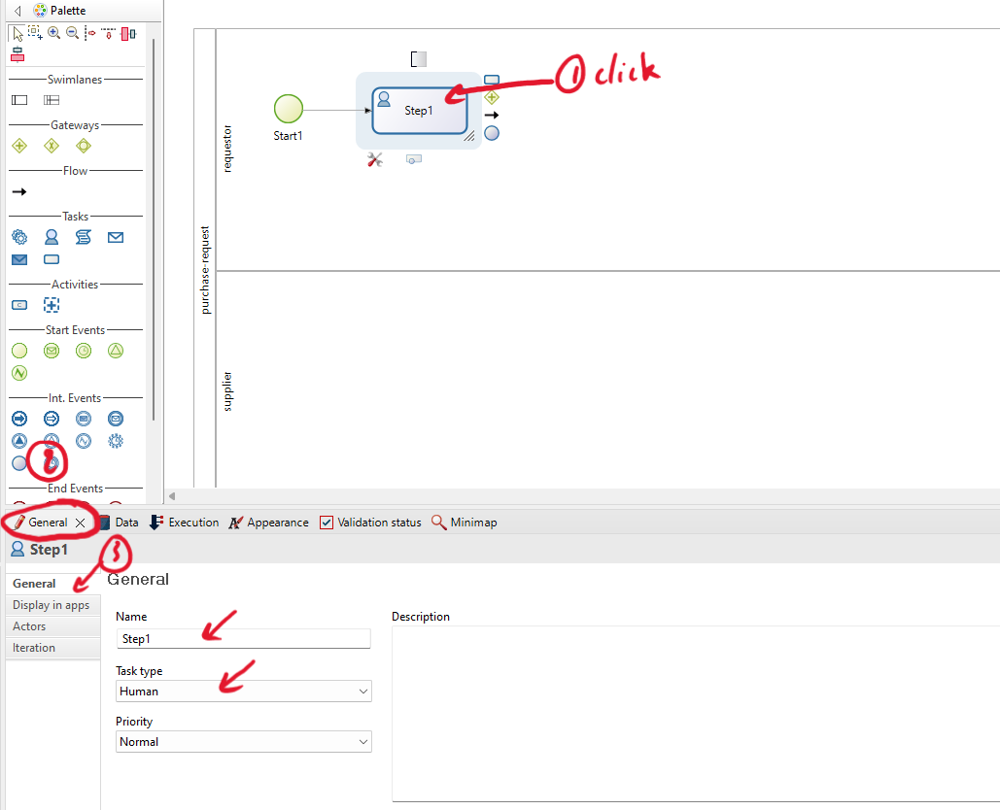
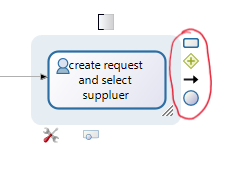
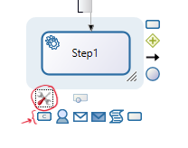
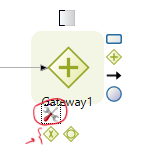
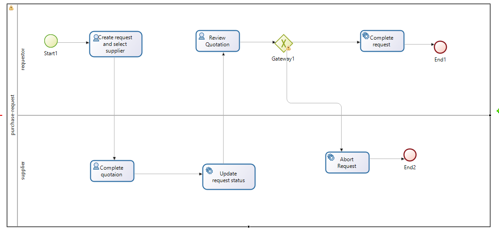

Transform BPMN into a process model within the studio.
In this exercise, you need to create the BPMN model below in the studio.

Add Pool and Lane
-
Double-click on your process model to start the modeling of the BPMN model.

-
Change the pool name by clicking on the pool. Then, within the 'General' tab, click on 'Pool' and proceed to edit the name by clicking on the edit icon of the lane.


-
Add new lane to the process model.

-
Change the name of the lane by clicking on the 'General' tab, then 'Lane,' and finally, click on the edit icon to modify the lane name. Adjust the names of the lanes based on the process model above.

-
Result:

Add Process Model Elements
After adding the pool and the lane, we need to add other elements (activities, gateways, and events).
-
Change the activity name and properties by clicking on it. Then, within the 'General' tab, you can modify the name of the activity and the 'Task Type'.

-
Add the next element by clicking on it. Then, select the type of element you want to add (activities, gateways, events, etc.).

-
You can also change the activity type by clicking on the activity and then on the settings icon. Select the type you need.

-
You can also change the gateway type by clicking on the gateway and then on the settings icon. Select the type you need.

-
Add all the elements from the process model above to prepare for the next exercise and begin implementing our process model.
